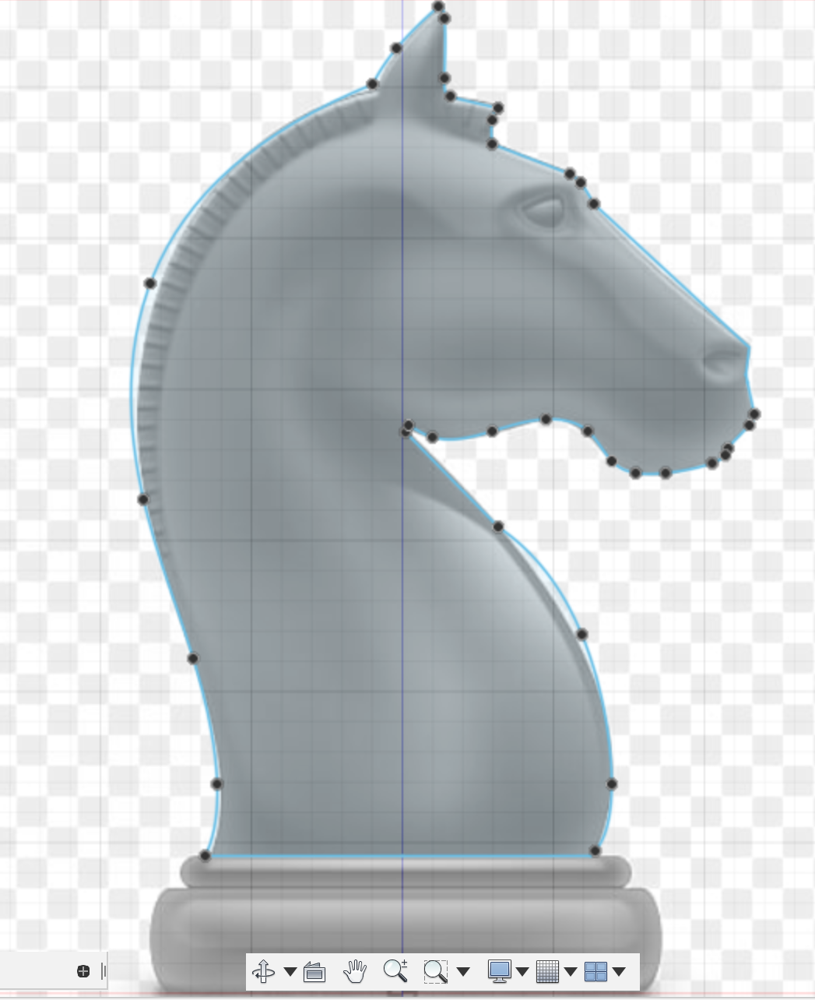

Computer Aided Design, 2D & 3D Drawing
2D & 3D Drawing
There are several softwares we can use to draw 2D & 3D raster and vectors, such as GIMP, Photoshop, Illustrator,
We can use GIMP or Photoshop to resize an image, remove the background, add a border, etc.
As I already have Photoshop installed, I will be using it. This exercise reminds me of when I first came to Singapore Polytechnic
when I was first introduced to Photoshop, and learnt about vector and raster softwares.
Photoshop exercise
I used Photoshop to remove the background of this image:

I used the Quick Selection tool to select the boat and refined the edges using the tools in the masking mode. Then,
I toggled the sliders to feather the edges slightly and increased the contrast so that the image would still be sharp. I changed the
result to Create New Layer with Mask. After masking the boat, I placed the seaside background image behind it (found on google), and edited the
colours for both images so that they would match more.
(Using the same file, I added a seaside background):

AUTODESK FUSION 360
A free software available for download online. It requires an internet connection. It can render 3D models. Fusion 360 saves the previous versions that you can revert to if you make a mistake, found in the Data Panel on the left.
We can use the View Cube to navigate the planes and different axis.
Complicated designs will have multiple components.
We usually work in Millimetre but that can be changed.
We can use a canvas to trace over for our design. It will end up on the sketch layer which we use to extrude the shapes to make them 3D.
Design History shows us the steps we took to arrive at our final design. Here, we can also edit the aspects that we want to change at certain points in time, and it updates the final product.
Grids can help us layout more easily and enabling ‘Snap to Grid’ is recommended.
Dimensions can be added using the shortcut "D" and clicking on the part where you want to add a dimension.
After we are done with the sketch, we click "Stop Sketch".
Generative design is a useful tool to help us generate more complex designs.
Mirroring can be used for planes and solids to duplicate them in Fusion 360.
The solid should be selected before duplicating so that the whole thing will be duplicated.
Offset plane can be used to create a plane floating above another, so we can sketch on it.
When there are many profiles, you can turn off the visibility so that it is easier to work,
especially when you are creating a box that has sides covering the area you want to focus on.
We tried the software out, with 3 exercises:
We can use lines to construct our drawing and use the trim tool to remove the excess if needed. We can also convert lines to construction lines if we no longer need them. The construction lines are shown as dotted lines. Blue lines are non-constrained lines, which can be moved. If we want them to stay, we can add dimensions to lock it in place.
Nametag Exercise
With Fusion 360, we can make anything that can be made into a real object using a 3D printer. The lecturer showed us a nametag and bowl that was made using the 3D printer, and asked us to try it out on our own. The nametag shown was something that you would see in a stationery store, and I would never have imagined that it was handmade using a 3D printer! Excited to try it out for myself, I made a nametag in Fusion 360, using a different design from the example shown in class. I like how you can personalise your design on Fusion 360. For the dimensions, I followed the reccomended specifications given by the lecturer so that the nametag would not be too thick or thin (could be fragile and break). I made the width of the nametag 60mm, with height 30mm and an offset of 2mm for the border.
I used glossy blue plastic for the text and borders, translucent matte white plastic for the rest of the body, under Appearance.
Finished product:Fidget Spinner Exercise
I made a fidget spinner in Fusion 360, following the design shown in class.
The measurements for the hex nuts were obtained from the pdf on the
website.
- Make a sketch on the top plane, making a two circles for the bearing in the center, 8mm and 22mm respectively.
- Make an offset of 2mm for the outer circle to contain the bearing.
- Draw a line of 45mm from the origin up to use as a temporary guide.
- With the line as a guide, draw a hexagon using the edge polygon tool spanning 6.5mm (13mm divided by 2), with 6 sides.
- Since the hexagon is not sitting on the line, use the move tool to reposition it.
- Draw a circle around the hexagon to reach the end of the line used as a guide. There should be about 2mm from the hexagon to the circle.
- Draw lines to connect the bearing to the circle at the end of the line.
- Using the trim tool, remove the guide line in the center.
- Copy and paste the entire sketch twice, rotating at 120 degrees (360 divided by 3).
- Delete the center circles twice until only one version of the bearings are left.
- Hold shift to select all the shapes and extrude them, using a thickness of 8mm.
- Change the material and colour.

After extruding, I realised that there were a few small holes in the fidget spinner. Therefore, I used the design history and went back to the sketch step before extruding. There, I found that the problem was some overlapping lines causing the small holes.
I then used the trim tool to remove them.
Bowl Using LOFT feature
Using revolution, vessels such as bowls and vases can be made. We were tasked to try it out. I decided to make a simple bowl. It took a few attempts before I could get it right, but eventually a managed to make a bowl that I was satisfied with. Through this exercise, I learnt that it is important to plan out your design before executing it. We can plan it out by drawing or sketching on a piece of paper first, marking out the measurements, before trying to create it on Fusion 360.
- Make a sketch on the FRONT plane.
- I tried making it using a circle, but realised that will not create the right shape.
- Next, I tried using an oval to make the shape of the bowl and used offset for the thickness.
- Using a rectangle to and two circles at the end, I made the base.
- Cutting out the corner I needed was done by drawing a flipped "L" using the line tool (shortcut: L)
- Using the trim tool (shortcut: T), I removed the excess lines

- Select both and the axis, revolve to make the base.
- The result was a plate at the bottom and the bowl floating on the top.
Using the play buttons to scroll through the Design History, I went back and
moved the rectangles and circles to intersect the bowl.


- Under Appearance, I changed the material to White ABS Plastic.

Chess Piece Exercise
We learnt more about techniques you can use in Fusion 360, such as revolve. With the knowledge picked up from the class, we created this knight chess piece that can be 3D printed into a real chess piece.
The profile should be made by extrusion. The base should be made by revolving.
The chess piece I decided to make was the knight (horse head).
Photo reference used to trace for the sketch is taken from google.
- Make a sketch on the FRONT plane, for the horse head.
- Paste the image from google onto the sketch to use as a guide.
- Trace the image from google of the head until it is closed (profile).
 - Extrude the shape.
- Make two circles at the end, using the photo as a guide.

- Select both and the axis, revolve to make the base.